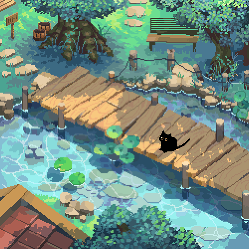

by jess, shir, linh, and justin

exchange rate no prices — pay in pocket lint, one (1) mushroom cap, a sincere compliment, or spare stardrops (imaginary gold also ok)
showing matcha · whole milk · hot
under construction, we're sipping on it
nothing here yet — pick another tab ✿
café sounds for the garden — open in Spotify if the player is shy
open playlist in Spotify